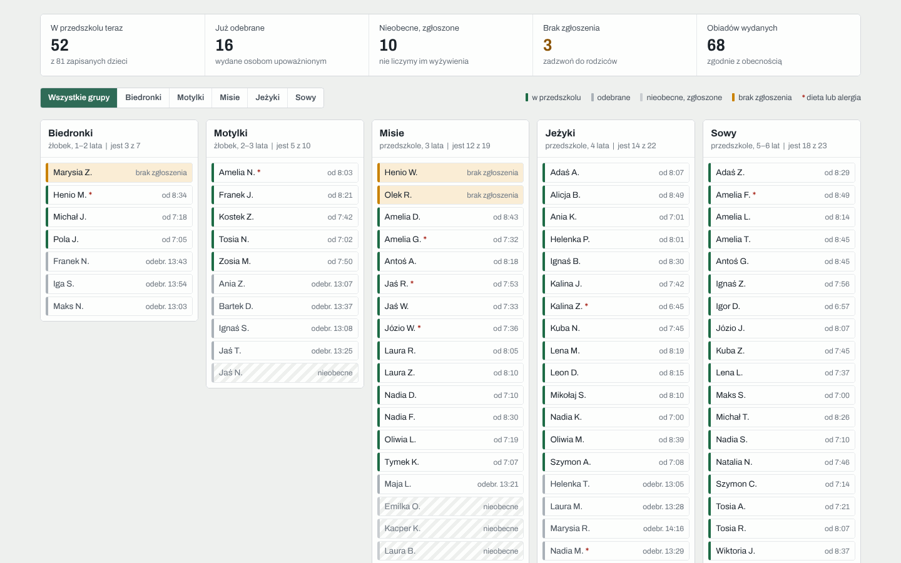

Przedszkole i żłobek
Obecności, opłaty rodziców, kuchnia i zgody

Dyrektor widzi, kto jest w przedszkolu, kto zalega z opłatą i ile obiadów zamówić. Rodzice dostają ogłoszenia i podpisują zgody.
- Dziś obecności i odbiory
- Opłaty czesne, wyżywienie, zaległości
- Kuchnia posiłki, diety, jadłospis
- Grupy i miejsca limity, lista oczekujących
- Ogłoszenia i zgody kto przeczytał, kto podpisał